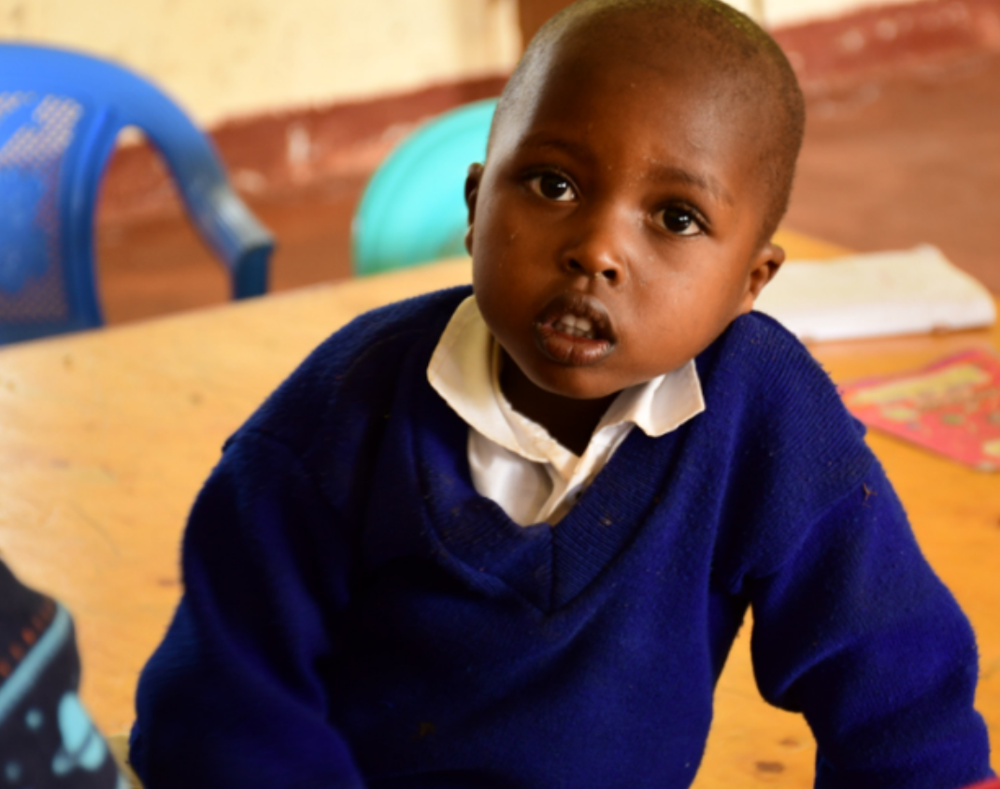
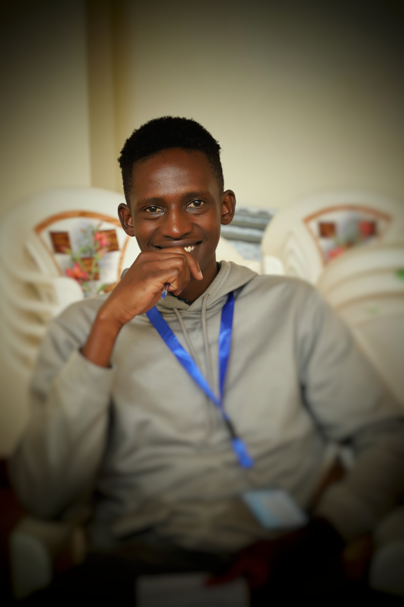

Happy Hour for Amani Shelter
A poster designed in Canva for the Happy Hour for Amani Shelter event.

Ronie Arnold
Photographer, videographer and designer. A Communication and Journalism student at Moi University, Kenya, telling human stories.

I'm Ronie Arnold, a Bachelor of Science in Communication and Journalism student at Moi University in Kenya, expecting to graduate in December 2027.
I work as a visual storyteller across photography, video, graphic design and editorial work, with a particular interest in meaningful human stories.
I'm building this portfolio to share my work and to apply for internships and media roles.
A growing collection of photography, video, design and editorial projects.
A poster designed in Canva for the Happy Hour for Amani Shelter event.
Loading more projects…
I completed an attachment with AMPATH Public Health, where I gained practical experience in:
Attachment dates and project details will be added here.
I'm open to internships and media opportunities. Get in touch to talk about a story or a project.
Contact details will be added soon.